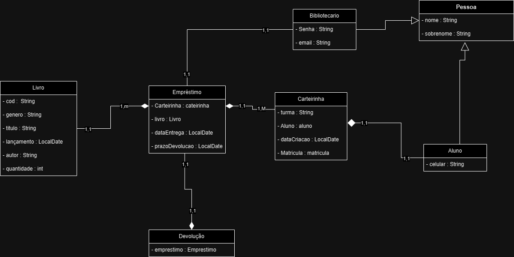
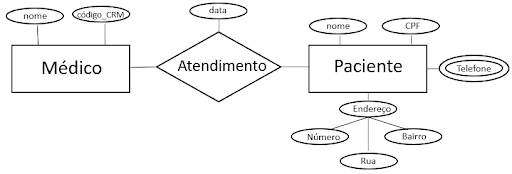

Um SGBD é um Sistema Gerenciador de Banco de Dados, responsável por armazenar, organizar, manipular, consultar e proteger dados. Ele permite que vários usuários acessem os dados de forma segura e controlada. Existem SGBDs relacionais, que usam tabelas e linguagem SQL; SGBDs NoSQL, que trabalham com documentos, grafos, coleções ou chave-valor; além dos distribuídos, orientados a objetos e híbridos. Esses sistemas são usados em praticamente qualquer solução tecnológica: sistemas empresariais, redes sociais, apps móveis, e-commerce, bancos online, plataformas de streaming e muitos outros.
Entre os bancos relacionais mais utilizados estão MySQL, PostgreSQL, SQL Server, Oracle e MariaDB. Entre os bancos NoSQL mais conhecidos estão MongoDB, Cassandra, Redis, Neo4j e CouchDB. Cada banco é escolhido conforme as necessidades de escalabilidade, tipo de dados, velocidade e estrutura.
Um dicionário de dados é uma descrição textual de cada campo usado no banco, informando nome, tipo, tamanho, restrições, significado e exemplos. É como uma documentação interna do banco. Os tipos de dados mais comuns incluem inteiros, decimais, números de ponto flutuante, textos, datas, horários, timestamps e valores booleanos. Em bancos NoSQL, também são usados arrays, objetos e identificadores especiais.
A modelagem de banco de dados é o processo de planejar e organizar os dados antes de construí-los no SGBD. O MER, Modelo Entidade-Relacionamento, é a estrutura conceitual que define entidades, atributos e relacionamentos. O DER, Diagrama Entidade-Relacionamento, é a representação visual (o desenho) desse modelo. No MER, definimos as entidades e como elas se conectam; no DER, mostramos isso graficamente.
A imagem a seguir mostra um Diagrama de Entidade-Relacionamento (DER) de um sistema de biblioteca, representando entidades, atributos e relacionamentos entre livros, alunos, bibliotecários e processos de empréstimo e devolução.
O diagrama apresenta três entidades principais: Médico, Paciente e o relacionamento Atendimento. A entidade Médico possui dois atributos: nome e código_CRM, que identificam e caracterizam o profissional. A entidade Paciente também possui atributos próprios: nome, CPF e Telefone (que está representado como atributo multivalorado, pois o paciente pode ter mais de um número). Além disso, o paciente possui um atributo composto chamado Endereço, dividido em Rua, Número e Bairro. O relacionamento Atendimento liga o médico ao paciente e possui um atributo próprio: data, indicando quando o atendimento ocorreu. Assim, cada atendimento é um evento que envolve um médico que atende um paciente em uma determinada data.
